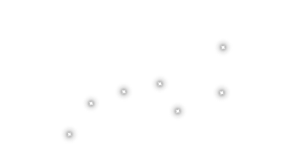

밤이 어찌나 쓸쓸히 끝맺는지
나 많은 애가를 익히 들었노라.

낮이 어찌나 외로이 빛나는지
나 많은 찬가를 자주 외웠노라.
거룩한 창조주 대모 일마타르,
그분이 낳으신 하나뿐인 자식
불멸의 대시인 베이네뫼이넨
그 탄생을 지금 내가 읊으리라.
창공의 딸은 처녀로 지냈노라,
더없이 아름다운 대자연의 딸.
푸른 하늘의 기나긴 강역에서
끝없이 뻗은 머나먼 창천에서
그 거룩함을 오래도록 지키며
영원토록 순결히 살아갔도다.
세월은 지루하게 흐르고 흘러
삶은 나날이 짐짝과 같아지니
푸른 하늘의 기나긴 강역에서
끝없이 뻗은 머나먼 창천에서
늘상 외로움에 잠긴 마음으로
오래도록 순결히 살아갔도다.
이윽고 소녀가 아래로 내려와
출렁이는 물결에 몸을 맡기고
드넓은 바다 위에서 지내노라,
널따란 물결 위에서 지내노라.
그때 돌연 사나운 폭풍이 일어
동녘에서 큰 바람 휘몰아치니
바다에서 거칠게 물거품 일고
파랑이 높이 높이 솟구치노라.
매몰찬 풍랑은 소녀를 흔들고
차디찬 너울은 소녀를 때리고
드넓은 바다의 푸른 수면 위로
거품 이는 파도 마루로 떠밀어
바람 숨결 바닷물로 껴안으니
혼자된 몸에 새 생명 깃드노라.
묵직한 산부의 아랫배를 품고
고통의 무게가 몸을 짓누르니
해산을 기다려 손꼽아 칠백 년,
아홉 생애를 짊어진 고된 멍에!
그러나 출산을 이루지 못하고
미완의 생명은 아니 나오노라.
흘러 흘러 물의 어머니 된 소녀
불타는 출산의 괴로움 속에서
끔찍한 태내의 진통을 안고서
동으로 헤엄치고 서로 헤치고
북으로 나가고 남으로 나가고
하늘 모든 바닷가 헤엄쳤거늘
끝끝내 출산을 이루지 못하고
미완의 생명은 아니 나오노라.
이윽고 부드러운 눈물 흘리며
이렇게 제 마음을 노래하나니,
“나의 운명 어찌 이리 비참한가,
이토록 떠도는 불행한 운명이!
하늘 아래로 내려와 머물다가
이리저리 센 풍랑에 휩쓸리고
사방팔방 센 물결에 밀리면서
드넓고 끝없는 물과 물 위 아래
겹겹이 펼쳐진 파도 너울 너머
내가 헤맨 길 결코 짧지 않도다.
차라리 하늘에 머물렀더라면
영원토록 떠돌지 않았을 것을,
물의 어머니란 이름 짊어지고
이리저리 헤매지 않았을 것을!
여기 내 삶은 차갑고 음울하며
순간 순간이 괴롭기만 하나니,
쉬지 않고 물결에 뒤흔들리고
멈추지 않고 수면을 떠도나니.
오 가장 위대한 천둥의 우코여,
온 하늘을 떠받치는 제왕이여!
어서 이리 와서 나를 도우소서,
그대의 구원을 간청하나이다.
환난에서 소녀를 풀어 주소서,
출산의 고통을 끝맺게 하소서.
속히 오소서, 더욱 빨리 오소서,
그대 이름 덜 부르짖게 하소서!”
잠깐의 시간이 앞으로 흐르고
찰나의 정적을 깬 날갯짓 소리
아름다운 쇠오리 홀연 날아와
물 위를 가뿐하게 빙글 맴돌며
날개 접고 몸을 쉴 땅을 찾더라,
머무르고 안식할 집을 찾더라.
동으로 날갯짓하고 서로 날고
북서로 날고 남으로 날아가도
오리가 찾는 곳 어디도 없도다.
황량한 땅조차 한 조각 없으며
둥지 틀 곳조차 한 자리 없으며
잠깐 앉아 쉴 횃대마저 없도다.
천천히 날고 천천히 떠다니다
깊이 생각하고 깊이 사색하니
“바람 속에 둥지를 틀어야 할까?
물결 위에 앉아서 쉬어야 할까?
바람이 내 집을 뒤엎어 부수리,
물결이 내 몸을 밀어내 쫓으리.”
세상에 가득한 물의 어머니가
한때 창공의 딸이었던 그분이
바다에서 무릎을 들어 올리고
물결에서 어깨를 들어 올리니
이렇게 오리가 둥지 틀 자리와
평화로운 쉼터를 찾게 하노라.
하늘 날던 쇠오리, 아름다운 새
천천히 날고 천천히 떠다니다
바다의 푸른 물결 위로 솟구친
물의 어머니의 큰 무릎을 보고
기쁨에 젖어 이리 생각하나니
“초목 자란 신록의 흙이로구나!”
천천히 날고 천천히 떠다니다
무릎 위로 살포시 내려앉아서
그토록 갈망하던 둥지를 틀고
금빛으로 빛나는 알을 낳노라.
여섯 개의 빛나는 황금 오리알,
그리고 일곱 번째 무쇠 오리알.
쇠오리 무릎에 앉아 알을 품자
어머니의 몸 감싸여 데워지니
하루를 품고 또 하루를 품으며
셋째 날도 알을 품어 데우노라.
세상에 가득한 물의 어머니가
한때 창공의 딸이었던 그분이
온 육신이 무덥고 또 무더우며
온 살갗이 뜨겁고 또 뜨겁도다.
두 무릎이 불타 버릴 것만 같아
핏줄이 다 녹아 버릴 것만 같아
깜짝 놀란 무릎 바들바들 떨고
팔다리를 마구 떨치고 저으니
일곱 알 떨어져 물로 구르노라,
바다의 물결 아래 가라앉노라.
조각조각 깨져 흩어지는도다,
산산이 부서져 떨어지는도다.
그 알 진흙 아래 아니 가라앉고
깨졌으되 해수에 아니 섞이니
모든 조각 선한 것으로 변하고
모든 파편 고운 것으로 화하네.
깨진 알의 아래 껍데기를 보라,
단단한 대지가 되어 떠받노라.
깨진 알의 위쪽 껍데기를 보라,
드높은 저 위 궁창을 이루노라.
깨진 알의 노른자를 볼지어다,
해가 되어 그 광채 찬란하도다.
깨진 알의 하얀자를 볼지어다,
달이 되어 그 광채 은은하도다.
깨진 알의 얼룩진 데를 보아라,
하늘을 수놓는 별로 빛나노라.
깨진 알의 어두운 데를 보아라,
하늘 드리워 구름으로 뜨노라.
세월은 빨리도 흐르고 흐르며
해와 년은 나날이 멀어지나니
새로운 태양 찬란히 타오르고
새로운 달빛 은은히 비추거늘
물의 어머니 여전히 헤엄치네,
물의 어머니이자 창공의 소녀.
부드러운 너울을 떠다니노라,
안개 낀 물결 위를 떠다니노라.
어머니의 앞에는 잔잔한 수면,
어머니의 뒤에는 쾌청한 하늘.
아홉째 해가 다 지나갈 무렵에
열째 해 여름이 다가올 무렵에
바다 아래서 머리 들어 올리고
이마를 하늘로 치켜 세우나니
이윽고 어머니 창세하시노라,
이 세상에 질서를 가져오노라.
드넓게 열어젖힌 바다 위에서,
끝없이 뻗어나가는 물 위에서.
손끝을 뻗어 가 닿는 자리마다
드높은 벼랑 우뚝 솟아나누나.
발끝을 뻗어 디디는 자리마다
고기 모일 우묵한 굴 파이누나.
입김 불어 물 밀어낸 자리마다
바다 아래 깊은 심연 깔리누나.
땅을 바라보며 몸을 돌리나니
매끄러운 바닷가 그곳에 뻗고
땅을 디디고서 발을 올리나니
연어가 모여 낚시터를 이루며
땅을 마주보고 머리 대었더니
돌 깎여 굽이진 물굽이 되노라.
땅에서 저 멀리 헤엄쳐 나아가
드넓은 대양에 멈추어 서나니
바다 아래 바위를 빚어 세우고
두 눈에 가려진 암초 키우나니
그 바위에 장차 배가 무너지고
숱한 뱃사람의 삶이 스러지리.
이렇게 수많은 섬이 생겨나고
바다에 바위와 암초 심어지고
하늘의 기둥이 바로 세워지고
모든 땅과 대륙에 이름이 붙고
바위마다 글과 그림 새겨지고
절벽마다 틈과 균열 그려지네.
허나 아직 태어나지 않았도다,
불멸의 대시인 베이네뫼이넨!
굳건한 노현자 베이네뫼이넨
어머니의 태중에 들어앉아서
서른 여름을 지새워 보내노라
서른 겨울을 지나쳐 보내노라,
고요하고 부드러운 물 위에서
자욱히 거품 이는 파도 위에서.
깊이 생각하고 깊이 사색하니
“여기서 어찌 살아가야 하리오?
깊은 어둠에 잠긴 은신처에서,
비좁은 틈에 숨은 안식처에서,
달빛 한 줄기 아니 닿는 곳에서,
햇살 한 줄기 아니 미치는 데서!”
그리하여 이 노현자 입을 열어
이렇게 그의 바람을 말하나니,
“달이여 도우소서 해여 보소서,
북두칠성이여 지혜를 주소서!
이해할 수 없는 낯선 관문 너머
넘을 수 없는 기이한 문턱 너머
나를 사로잡은 작은 둥지에서
나를 붙드는 비좁은 거처에서
대지로 방랑자를 인도하소서,
트인 하늘로 이 사람 이끄소서.
하늘 비추는 달빛 보게 하소서,
따스한 해의 광채 보게 하소서.
머리 위 북두칠성 보게 하소서,
밤하늘 수놓은 별 보게 하소서!”
그러나 달은 그를 아니 도우며
노인을 해가 아니 굽어살피니
이에 제 운명을 깊이 한탄하며
삶이 나날이 짐짝과도 같더라.
그리하여 길 막는 양막의 빗장
약지 뻗어 비집어 열어젖히고
태중 걸어 잠그는 뼈의 자물쇠
왼 발가락 움직여 풀어헤치고
문턱에서 손으로 기어 나오네,
관문을 무릎으로 빠져나오네.
머리부터 바다 위로 떨어지고
두 손으로 물결 위를 헤치나니
이렇게 그가 바다에 오르노라,
물결 위를 오래도록 떠도노라.
다섯 해에 거듭하여 여섯 해를,
일곱 해에 거듭하여 여덟 해를
바다를 오래도록 유랑한 끝에
수면이 대지와 마주치는 자리
이름 없는 해각에 다다르노라,
초목 없는 황야에 다다르노라.
무릎으로 땅을 딛고 일어서고
팔을 짚어 육신을 일깨우나니
마침내 빛나는 월광을 보노라,
열락의 햇빛을 한껏 즐기노라.
북두칠성을 바로 마주하노라,
밤하늘 수놓은 별 우러르노라!
이것이 바로 그의 탄생이로다,
위대한 노현자 베이네뫼이넨.
영원토록 기억될 위대한 시인,
창공의 딸 일마타르의 외아들!